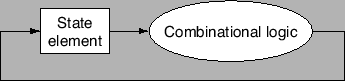

วิธีการกระตุ้นด้วยสัญญาณนาฬิกานิยามเวลาที่สัญญาณสามารถถูกอ่านหรือถูกเขียน ที่สำคัญคือถ้าข้อมูลถูกอ่านและเขียนในเวลาเดียวกันค่าที่อ่านได้จะเป็นค่าเก่าที่เก็บไว้ก่อนหน้า หรือเป็นค่าที่เพิ่งถูกเขียนลงไป หรือยิ่งกว่านั้นคือเป็นข้อมูลผสมกันระหว่างข้อมูลทั้งสอง ซึ่งการระบุวิธีการกระตุ้นด้วยสัญญาณนาฬิกาจะเป็นการป้องกันปัญหาดังกล่าว
เราสมมุติวิธีการกระตุ้นด้วยสัญญาณนาฬิกา แบบ edge-triggered ซึ่งค่าต่างๆ จะถูกเปลี่ยนค่าเมื่อเกิดการเปลี่ยนแปลงของขอบสัญญาณนาฬิกา การกำหนดในลักษณะนี้ค่าอินพุทจะถูกเขียนในวงรอบก่อนหน้า และจะแสดงค่าที่เอาท์พุทในวงรอบต่อไป
รูป 5.6 แสดง State Element สองชุดที่รายล้อมอยู่รอบวงจรลอจิก ที่ทำงานอยู่ในกรอบของวงรอบลัญญาณนาฬิกา สัญญาณจะเดินทางจาก Element 1 ผ่านวงจรลอจิก Combinational และไปยัง State Element 2 เวลาในการเดินทางผ่านวงจร Combinational คือเวลาของคาบสัญญาณนาฬิกา
เพื่อลดความซับซ้อน ในรูป 5.6 เราไม่ได้แสดงสายควบคุมการเขียน (Write Signal) เนื่องจากในวงจรลักษณะดังกล่าว การเขียนใน State Element จะเกิดขึ้นทุกวงรอบสัญญาณนาฬิกา ในกรณีที่การเปลี่ยนค่าของ State Element เกิดขึ้นตามการควบคุมภายนอก จึงจำเป็นต้องมีสัญญาณควบคุมการเขียนแยกต่างหาก
วิธีการกระตุ้นด้วยสัญญาณนาฬิกาโดยใช้ขอบสัญญาณนาฬิกา ทำให้สามารถอ่านและเขียนค่ารีจีสเตอร์ในวงรอบสัญญาณนาฬิการเดียวกัน จากรูป 5.7 ไม่ว่าการเขียนจะเกิดขึ้นที่ขอบขาขึ้นหรือขอบขาลง เนื่องจากค่าของ Combinational Logic มีการเปลี่ยนแปลงเฉพาะขอบของสัญญาณนาฬิกา จึงไม่มีการป้อนกลับของสัญญาณเมื่อใช้งานวงจรลอจิกด้วยวิธีการกระตุ้นด้วยสัญญาณนาฬิกา สามารถศึกษาเพิ่มเติมในรายละเอียดเรื่อง Setup time และ Settling Time
ในกรณีที่มีสายสัญญาณมากกว่าหนึ่งเส้น เราสามารถรวมกันแสดงในรูปเป็นเส้นหนา ขนาด 16 บิต หรือ 32 บิต เพื่อความง่านในการพิจารณารูป
|

|